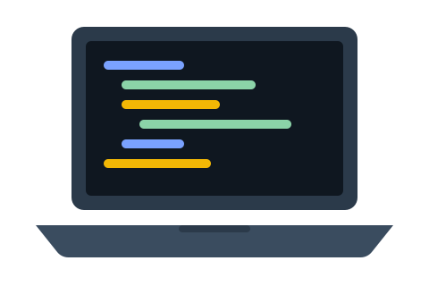

Hello, my name is Irinel Talica. I am continuing to work on web development.
This website is created as a reminder of Web Development II. The site is made using HTML5, CSS, and JavaScript to ensure that my knowledge of Web Development I is still there before proceeding to React.
Get in touch
About me
I am a student at Level 5, taking the course Web Development II. Last year, I gained skills in creating pages using HTML, styling them using CSS, and adding behaviors through JavaScript. Now, I seek to make my knowledge more dependable so that I can take on building larger projects.
I like pages that are easy to read, work on a phone and do what they say they do. This one is small on purpose.
Skills I'm refreshing
-
HTML5
Semantic elements such as header, nav, main, section and footer, with a clear heading structure.
-
CSS
Flexbox and Grid for layout, plus a media query so the page works on phones and desktops.
-
JavaScript
Selecting elements, listening for events and updating the page through the DOM.
-
Developer tools
Resizing the browser, reading the console and fixing the problems I find.
What I want to get better at
Select a goal to read more about it.
React is coming up later in this module. I'm keeping this page in plain JavaScript first so I understand what React will be doing for me.
Alt text, labels and keyboard access are easy to forget. I want to check them as I go instead of at the end.
Opening the developer tools at the start of a task, not the end, should save me time.
Say hello
This is a practice form, so nothing is sent anywhere.